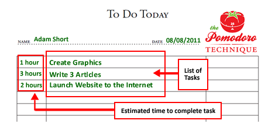

A técnica foi desenvolvida no final dos anos 80 pelo italiano Francesco Cirillo, que procurava uma maneira de aumentar sua produtividade nos estudos durante os primeiros anos de universidade. Para isso, ele utilizou um timer de cozinha para organizar suas tarefas. Francesco Cirillo, criador da técnica Pomodoro / Reprodução Seu timer tinha o formato de um tomate (pomodoro, em italiano) e girava durante 25 minutos, emitindo um barulho forte ao final desse prazo. Nesse meio tempo, Cirillo se concentrava nas suas tarefas sem interrupções (mesmo!), mantendo-se 100% focado. Ao perceber os resultados satisfatórios, divulgou sua técnica em 1992. Atualmente existem outros sites e aplicativos – como Tomato Time, Pomodoro Time, Pomodoro Keeper, Focus Keeper, etc. – que ajudam na aplicação dessa técnica e dispensam o timer de cozinha.

A técnica se baseia na ideia de que dividindo o nosso fluxo de trabalho em blocos de concentração intensa, conseguimos melhorar a agilidade do cérebro e estimular nosso foco. Em outras palavras, melhoramos nossa gestão do tempo e ficamos mais eficientes. Para colocá-la em prática você vai precisar de: Timer ou cronômetro para fazer contagem regressiva Uma lista de tarefas (“to-do-list”) Lápis e borracha Primeiramente, você deve fazer uma lista de tarefas a serem desempenhadas durante o dia. Depois, basta dividir seu tempo em períodos de 25 minutos (chamados “pomodoros”) e trabalhar ininterruptamente em suas tarefas nesses períodos.
Primeiramente, você deve fazer uma lista de tarefas a serem desempenhadas durante o dia.
Depois, basta dividir seu tempo em períodos de 25 minutos (chamados “pomodoros”) e trabalhar ininterruptamente em suas tarefas nesses períodos.

Quando o timer tocar (ao fim dos primeiros 25 minutos), faça um X nas tarefas concluídas ou anote o status de seu trabalho (50% concluído, por exemplo) e faça um breve intervalo de 5 minutos. Nessa pausa, aproveite para fazer outras coisas não relacionadas à tarefa (ir ao banheiro, ligar para um cliente, tomar um café, etc). A cada quatro ciclos, faça uma pausa maior (entre 15 e 30 minutos) para descansar. Esses intervalos entres os pomodoros são fundamentais para “oxigenar o seu cérebro” e aumentar a agilidade mental. Vale lembrar que essas medidas de tempo são apenas as sugeridas no método clássico. Nada impede que você encontre o seu próprio equilíbrio e período de descanso ideal.
Os objetivos da técnica Pomodoro estão ligados à diminuição da ansiedade e ao aumento do foco e concentração nas tarefas, evitando tempo desperdiçado e distrações.
Ao anotar no papel o que precisa ser feito, você consegue não só organizar melhor suas atividades, como também estabelecer metas para cada dia ou período. Assim, torna-se mais fácil acompanhar seus resultados e avanços.
Depois de alguns dias utilizando a técnica, você poderá notar alguns benefícios como as capacidades de:
entender quanto tempo leva para realizar cada tipo de tarefa,
entender o que te distrai recorrentemente e
descobrir quais são as principais interrupções no seu trabalho.
A técnica pode ser usada para organização de tarefas de diversos tipos, como longos períodos de estudo (vários concurseiros pelo país adoram ela!), atividades a serem desempenhadas em um dia de trabalho,
projetos que precisam ser terminados, atividades domésticas, dentre outras.
Descubra como anda a sua gestão do tempo fazendo as seguintes reflexões: Você estuda e trabalha até ficar cansado ou faz intervalos com frequência? Antes de começar, você faz uma lista com as tarefas a serem desempenhadas ou tenta lembrar de cabeça? Você sabe quais são as principais causas de interrupção do seu trabalho? Estima o tempo que gastará com determinada atividade e depois consegue conferir se foi eficiente? Você trabalha bem na corrida contra o relógio? Pensar sobre isso é importante para que você conheça melhor seu próprio ritmo de trabalho. Cada pessoa é diferente e só ela mesma, através de observações e testes, consegue melhorar sua própria produtividade e criar um ritmo mais adequado para si. Na websérie abaixo, você descobre mais sobre gestão de tempo e produtividade, incluindo a importância de priorizar tarefas e criar um bom plano de ação:
A técnica Pomodoro e tudo mais é importante porque o dano causado por interrupções é real. Segundo Gloria Mark, professora da University of California de Irvine e especialista quando se trata dos efeitos de distrações e interrupções no escritório – aquelas que você não tinha planejado, que são diferentes de pegar um café ou algo do tipo –, a jornada de trabalho tem mais a ver com minutos seguidos trabalhados do que com horas trabalhadas. Ela cronometrou as rotinas de diversos funcionários e descobriu que, em média, eles conseguem apenas três minutos e cinco segundos de trabalho ininterrupto antes de uma distração. Esse tipo de interrupção pode ser um e-mail, um telefone, uma “pergunta rápida” ou pedido de ajuda de um colega, entre outras coisas. E 44% das vezes a interrupção vem do próprio indivíduo, que faz coisas como abrir o WhatsApp ou o Facebook e perde o ritmo ou a linha de raciocínio. Esse conteúdo faz parte do nosso minicurso por e-mail “8 ferramentas para ser um líder melhor” Inscreva-se aqui! Voltar à tarefa em mãos pode levar outros vinte minutos e, logo depois, outra interrupção pode estar a caminho. O que explica porque, às vezes, parece que a pilha de trabalho só faz aumentar. Para conseguir administrar melhor isso, você pode tomar medidas práticas como deixar o celular na mochila, desativar notificações por um tempo, desligar a internet durante um dado período ou procurar um lugar no escritório que lhe dê mais privacidade na hora que precisar se concentrar, por exemplo. Quando se trata do método Pomodoro que esta matéria explicou, vale até fazer uma placa de papel com os dizeres “estou em Pomodoro”. Assim, os outros entendem que, nos próximos 25 minutos, você estará ocupado – e verdadeiramente concentrado.
The technique was developed in the late 80's by Italian Francesco Cirillo, who was looking for a way to increase their productivity in their studies during their early college years. For this he used a kitchen timer to organize his tasks. Francesco Cirillo, creator of the Pomodoro / Reproduction technique Its timer was shaped like a tomato (pomodoro in Italian) and spun for 25 minutes, making a loud noise at the end of that time. In the meantime, Cirillo focused on his tasks without interruption (really!), Staying 100% focused. Realizing the satisfactory results, he released his technique in 1992. There are currently other websites and apps - like Tomato Time, Pomodoro Time, Pomodoro Keeper, Focus Keeper, etc. - that help in the application of this technique and dismiss the kitchen timer.
The technique is based on the idea that dividing our workflow into blocks of intense concentration, We have been able to improve brain agility and stimulate our focus. In other words, we have improved our time management and become more efficient. To put it into practice you will need: Timer or timer to count down A to-do-list Pencil and eraser First, you must make a list of tasks to be performed during the day. Then simply divide your time into 25-minute periods (called “pomodoros”) and work uninterruptedly on your tasks during those periods.
First, you should make a list of tasks to perform during the day.
Then simply divide your time into 25-minute periods (called “pomodoros”) and work uninterruptedly on your tasks during those periods.
When the timer rings (after the first 25 minutes), X on completed tasks or write down the status of your work (50% complete, for example) and take a brief 5 minute break. During this break, take the time to do other non-task-related things (going to the bathroom, calling a customer, having coffee, etc.). Every four cycles, take a longer break (between 15 and 30 minutes) to rest. These intervals between pomodoros are critical to "oxygenate your brain" and increase mental alertness. Remember that these time measurements are only those suggested in the classical method. Nothing prevents you from finding your own balance and optimal rest period.
The objectives of the Pomodoro technique are linked to decreasing anxiety and increasing focus and concentration on tasks, avoiding wasted time and distractions.
By writing down what needs to be done on paper, you can not only better organize your activities, but also set goals for each day or period. This makes it easier to track your results and advances.
After a few days using the technique, you may notice some benefits such as the capabilities of:
understand how long it takes to accomplish each type of task,
understand what recursively distracts you and
find out what are the main interruptions in your work.
The technique can be used for organizing tasks of various kinds, such as long periods of study (many fellow nurses around the country love it!), Activities to perform on a workday,
projects that need to be completed, domestic activities, among others.
Find out how your time management is doing by doing the following thoughts: Do you study and work until you get tired or take breaks often? Before you get started, do you make a list of tasks to perform or try to remember in your head? Do you know what are the main causes of interruption of your work? Do you estimate the amount of time you will spend on a given activity and then see if it was efficient? Do you work well in the race against the clock? Thinking about it is important for you to know your own work rate better. Each person is different and only themselves, through observation and testing, can improve their own productivity and create a pace that suits them best. In the web series below, you find out more about time management and productivity, including the importance of prioritizing tasks and creating a good action plan:
The Pomodoro technique and everything else is important because the damage caused by interruptions is real. According to Gloria Mark, a professor at the University of California at Irvine and an expert when it comes to the effects of office distractions and interruptions - the ones you didn't plan on, that are different from getting coffee or something - the workday has to more to do with minutes worked than hours worked. She timed the routines of several employees and found that, on average, they only get three minutes and five seconds of uninterrupted work before a distraction. This type of interruption can be an email, a telephone, a “quick question” or a colleague's request for help, among other things. And 44% of the time the interruption comes from the individual himself, who does things like opening WhatsApp or Facebook and loses his pace or reasoning. This content is part of our “8 tools to be a better leader” email short course Sign up here! Getting back to the task at hand may take another twenty minutes, and then another break may be on its way. Which explains why, sometimes, it seems that the workload just increases. To better manage this, you can take practical steps like leaving your phone in your backpack, turning off notifications for a while, turning off the internet for a certain period of time, or looking for a place in the office that gives you more privacy when you need to focus, for example. example. When it comes to the Pomodoro method that this story explained, it is even worth making a paper plate that says "I am in Pomodoro". So others understand that within the next 25 minutes you will be busy - and truly focused.
La técnica fue desarrollada a finales de los 80 por el italiano Francesco Cirillo, quien estaba buscando una manera de aumentar su productividad en sus estudios durante sus primeros años universitarios. Para esto usó un temporizador de cocina para organizar sus tareas. Francesco Cirillo, creador de la técnica Pomodoro / Reproducción Su temporizador tenía forma de tomate (pomodoro en italiano) y giró durante 25 minutos, haciendo un ruido fuerte al final de ese tiempo. Mientras tanto, Cirillo se centró en sus tareas sin interrupción (¡en serio!), Manteniéndose 100% enfocado. Al darse cuenta de los resultados satisfactorios, lanzó su técnica en 1992. Actualmente hay otros sitios web y aplicaciones, como Tomato Time, Pomodoro Time, Pomodoro Keeper, Focus Keeper, etc. - Eso ayuda en la aplicación de esta técnica y descarta el temporizador de cocina.
La técnica se basa en la idea de que dividir nuestro flujo de trabajo en bloques de concentración intensa, Hemos podido mejorar la agilidad cerebral y estimular nuestro enfoque. En otras palabras, hemos mejorado nuestra gestión del tiempo y nos hemos vuelto más eficientes. Para ponerlo en práctica necesitará: Temporizador o temporizador para contar hacia atrás Una lista de tareas Lápiz y borrador Primero, debe hacer una lista de tareas a realizar durante el día. Luego, simplemente divida su tiempo en períodos de 25 minutos (llamados "pomodoros") y trabaje ininterrumpidamente en sus tareas durante esos períodos.
Primero, debe hacer una lista de tareas para realizar durante el día.
Luego, simplemente divida su tiempo en períodos de 25 minutos (llamados "pomodoros") y trabaje ininterrumpidamente en sus tareas durante esos períodos.
Cuando suena el temporizador (después de los primeros 25 minutos), X las tareas completadas o escriba el estado de su trabajo (50% completado, por ejemplo) y tome un breve descanso de 5 minutos. Durante este descanso, tómese el tiempo para hacer otras cosas no relacionadas con la tarea (ir al baño, llamar a un cliente, tomar un café, etc.). Cada cuatro ciclos, tome un descanso más largo (entre 15 y 30 minutos) para descansar. Estos intervalos entre pomodoros son críticos para "oxigenar su cerebro" y aumentar el estado de alerta mental. Recuerde que estas mediciones de tiempo son solo las sugeridas en el método clásico. Nada le impide encontrar su propio equilibrio y un período de descanso óptimo.
Los objetivos de la técnica Pomodoro están relacionados con la disminución de la ansiedad y el aumento del enfoque y la concentración en las tareas, evitando pérdidas de tiempo y distracciones.
Al escribir lo que debe hacerse en papel, no solo puede organizar mejor sus actividades, sino también establecer objetivos para cada día o período. Esto facilita el seguimiento de sus resultados y avances.
Después de unos días usando la técnica, puede notar algunos beneficios, como las capacidades de:
Comprender cuánto tiempo lleva realizar cada tipo de tarea,
entender lo que recursivamente te distrae y
Descubre cuáles son las principales interrupciones en tu trabajo.
La técnica se puede utilizar para organizar tareas de diversos tipos, como largos períodos de estudio (¡a muchas enfermeras de todo el país les encanta!), Actividades para realizar en un día laboral,
proyectos que deben completarse, actividades domésticas, entre otros.
Descubra cómo le está yendo a su gestión del tiempo haciendo lo siguiente: ¿Estudia y trabaja hasta que se cansa o toma descansos con frecuencia? Antes de comenzar, ¿hace una lista de tareas para realizar o intenta recordar en su cabeza? ¿Sabes cuáles son las principales causas de interrupción de tu trabajo? ¿Estima la cantidad de tiempo que dedicará a una actividad determinada y luego verá si fue eficiente? ¿Trabajas bien en la carrera contra reloj? Pensar en ello es importante para que conozca mejor su propio índice de trabajo. Cada persona es diferente y solo ellos mismos, a través de la observación y las pruebas, pueden mejorar su propia productividad y crear el ritmo que más les convenga. En la siguiente serie web, encontrará más información sobre la gestión del tiempo y la productividad, incluida la importancia de priorizar las tareas y crear un buen plan de acción:
La técnica Pomodoro y todo lo demás es importante porque el daño causado por las interrupciones es real. Según Gloria Mark, profesora de la Universidad de California en Irvine y experta en lo que respecta a los efectos de las distracciones e interrupciones de la oficina, las que no planeó, que son diferentes de tomar café o algo así, el día laboral tiene que más que ver con minutos trabajados que horas trabajadas. Ella cronometró las rutinas de varios empleados y descubrió que, en promedio, solo obtienen tres minutos y cinco segundos de trabajo ininterrumpido antes de una distracción. Este tipo de interrupción puede ser un correo electrónico, un teléfono, una "pregunta rápida" o la solicitud de ayuda de un colega, entre otras cosas. Y el 44% de las veces la interrupción proviene del propio individuo, que hace cosas como abrir WhatsApp o Facebook y pierde el ritmo o el razonamiento. Este contenido es parte de nuestro curso corto por correo electrónico "8 herramientas para ser un mejor líder" ¡Regístrese aquí! Volver a la tarea en cuestión puede llevar otros veinte minutos, y luego puede haber otro descanso en camino. Lo que explica por qué, a veces, parece que la carga de trabajo simplemente aumenta. Para gestionarlo mejor, puede tomar medidas prácticas como dejar su teléfono en su mochila, apagar las notificaciones por un tiempo, apagar Internet por un cierto período de tiempo o buscar un lugar en la oficina que le brinde más privacidad cuando necesite concentrarse, por ejemplo. ejemplo Cuando se trata del método Pomodoro que explica esta historia, incluso vale la pena hacer un plato de papel que diga "Estoy en Pomodoro". Entonces, otros entienden que dentro de los próximos 25 minutos estarás ocupado y verdaderamente concentrado.
 INÍCIO
INÍCIO PUBLICAÇÕES
PUBLICAÇÕES PDCA
PDCA Sobre
Sobre PORTUGUÊS
PORTUGUÊS
 INGLÊS
INGLÊS ESPANHOL
ESPANHOL